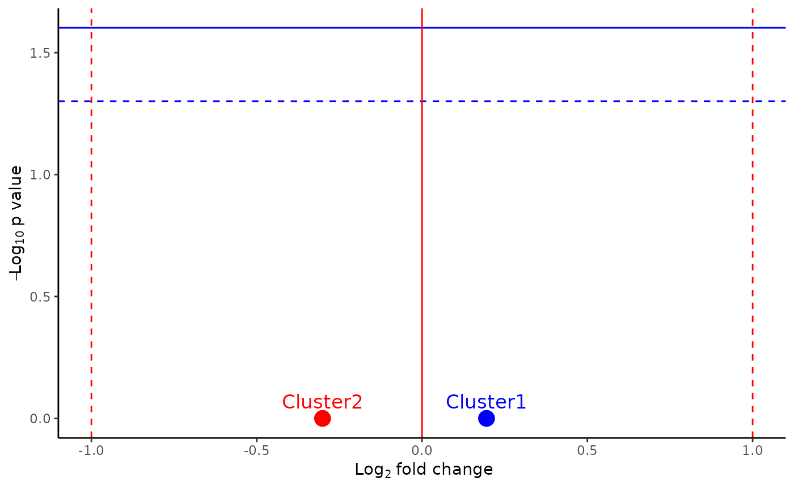

create and save an abundance volcano bar plot in the folder abundance
Usage
abVolPlot(
object,
cluster_idents,
sample,
cluster_order,
group_by,
group1,
group2,
color,
width = 5,
height = 5,
min_cells = 10,
paired = FALSE,
dir_output = "."
)Arguments
- object
Seurat object
- cluster_idents
variable in meta data with cluster names
- sample
variable in meta data for each sample
- cluster_order
vector determining the order of the clusters
- group_by
variable in meta data that categorize samples in groups
- group1
first group (nominator)
- group2
second group (denominator)
- color
color palette
- width
width of output plot (default: 5)
- height
height of output plot (default: 5)
- min_cells
remove all clusters that have less than minimal amount of cells (default = 10)
- paired
logical indicating whether you want a paired test (default FALSE)
- dir_output
directory to save the output plot (default: ".")
Examples
library(Seurat)
library(rstatix)
#>
#> Attaching package: ‘rstatix’
#> The following object is masked from ‘package:stats’:
#>
#> filter
set.seed(123)
pbmc_small$predicted.id <- sample(c("Cluster1", "Cluster2"), ncol(pbmc_small), replace = TRUE)
pbmc_small$sample <- sample(c("Sample1", "Sample2"), ncol(pbmc_small), replace = TRUE)
pbmc_small$AIE_type <- sample(c("LGI1", "control"), ncol(pbmc_small), replace = TRUE)
abVolPlot(
object = pbmc_small,
cluster_idents = "predicted.id",
sample = "sample",
cluster_order = c("Cluster1", "Cluster2"),
group_by = "AIE_type",
group1 = "LGI1",
group2 = "control",
color = c("Cluster1" = "blue", "Cluster2" = "red"),
width = 5,
height = 5,
dir_output = "."
)
#> Joining with `by = join_by(sample)`

unlink("volcano_plot_predicted.id_pbmc_small_LGI1_control.pdf")